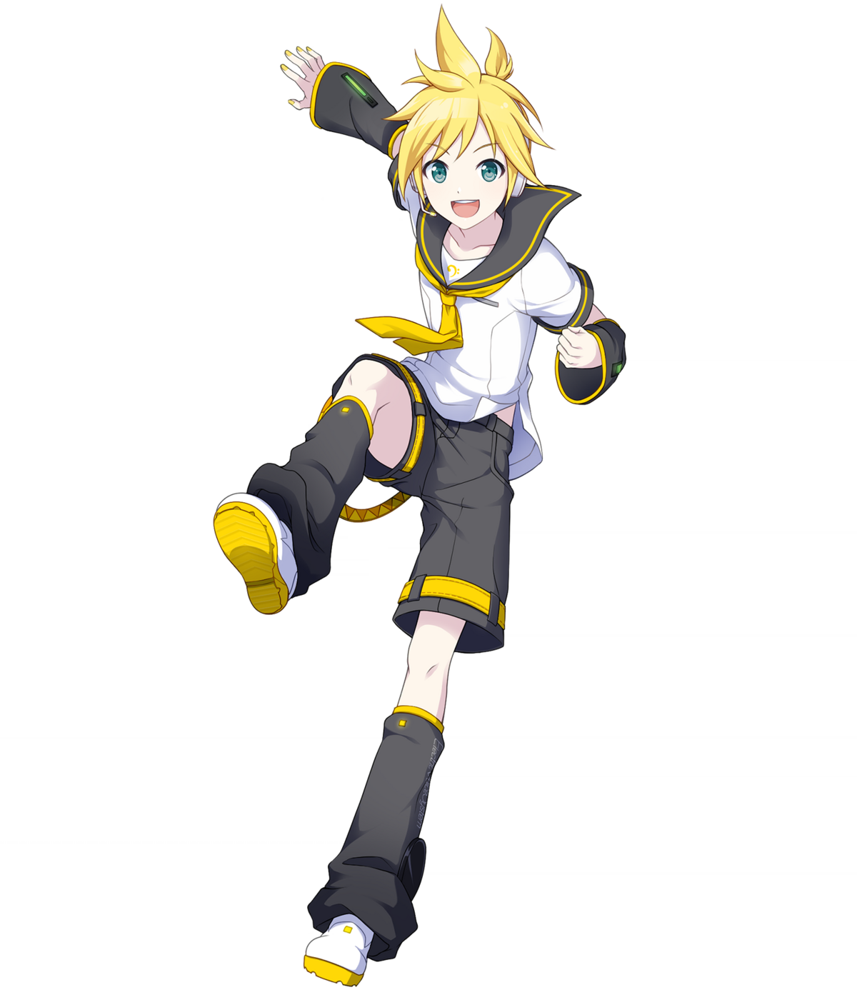
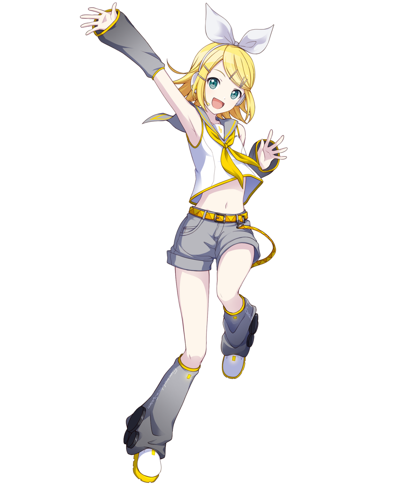
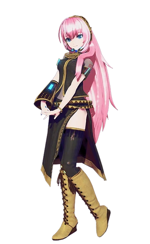

◇PERSONAS
Notable songs:
- "Traffic Jam" - Nilfruits
- "VENOM" - Kairiki Bear
- "Close To You (Niki cover)" - cilia/kyaami
Notable songs:
- "KING" - Kanaria
- "Donut Hole" - Hachi
- "ECHO" - Crusher
Notable songs:
- "Ghost Rule" - Deco*27
- "World is Mine" - supercell
- "DUNE" - Hachi

Notable songs:
- "Gigantic OTN" - Giga
- "Soundless Voice" - Hitoshizuku
- "Nitrobenzene" - Owata

Notable songs:
- "Lost One's Weeping" - Neru
- "Electric Angel" - Yasuo
- "Meltdown" - iroha
Notable songs:
- "Crescent Moon" - Kurousa
- "Judgment of Corruption" - mothy
- "FLOWER TAIL" - yuukiss
Notable songs:
- "An Ideal Day for A Disappearance" - Death Ohagi
- "Kasane Territory" - ZUN
- "Ghost Light" - sasakure.UK

Notable songs:
- "The Wanderlast" - sasakure.UK
- "Double Lariat" - Agoaniki
- "Leia" - Yuyoyuppe